|
|
|
Этот метод возник при попытке улучшить сортировку выбором, эффективность которой – О(n2). Сортировка выбором основана на выборе наименьшего ключа среди n элементов, затем среди n-1 элементов и т. д. Поиск наименьшего ключа соответственно требует n-1, n-2, n-3 . . . сравнений. Дерево выбораМожно ускорить сортировку, уменьшив количество сравнений при поиске наименьшего элемента, если в результате каждого прохода получать больше информации, чем просто позицию минимального элемента. Например, можно сравнить попарно соседние элементы и определить в каждой паре меньший элемент. Для этого потребуется n/2 сравнений. Затем сравнить попарно меньшие элементы и определить меньшие из меньших за n/4 сравнений. Наконец, получится одна пара меньших из меньших и определяется наименьший элемент. 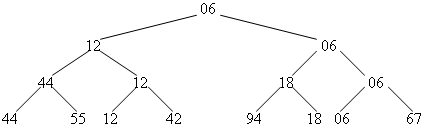 Хотя в сумме получилось n-1 сравнений, но зато определен минимальный элемент и получено дерево выбора, хранящее информацию о наименьших элементах в подгруппах из двух, четырех и т. д. элементов.
Как использовать это дерево для выбора
следующего наименьшего элемента? Для этого из дерева выбора убирается
наименьший элемент и переносится в
отсортированный массив. Затем наименьший
элемент в дереве заменяется на «дыру» (на
бесконечно большой ключ 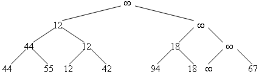 При возврате по пройденному пути корректируем промежуточные узлы дерева, замененные «дырами», выбирая вновь в парах наименьшие значения. 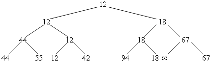 В корне дерева вновь оказывается элемент с наименьшим ключом. Вновь переносим его в отсортированный массив и удаляем его из дерева. Повторив n таких шагов, дерево становится пустым (то есть состоит из «дыр») и процесс сортировки закончен. Поскольку операция спуска по дереву при исключении элемента на каждом шаге пропорциональна log2n, то сортировка займет время nlog2n, то есть это лучше, чем О(n2) для элементарной сортировки выбором. Но, задача сортировки стала сложнее. Она требует хранения дополнительной информации (2n-1 элементов) о структуре дерева, сам алгоритм усложнился и выигрыш кажется сомнительным. Желательно избавиться от «дыр» в дереве, которые приводят к ненужным сравнениям при удалении элементов на последних этапах сортировки. Кроме того, хотелось бы вернуться к сортировке без использования дополнительной памяти. Пирамидальная сортировкаНужно найти такой способ организации дерева, чтобы не использовать дополнительной памяти и в нем не было бы «дыр». Автор Дж. Уильямс предложил организацию дерева в виде пирамиды, и сортировка соответственно называется пирамидальной сортировкой.
Пирамида
определяется как
последовательность ключей hl,
hl+1, ... , hr такая, что hi 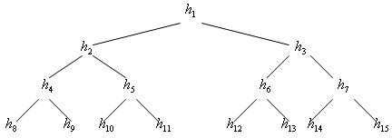 Часто пирамиду называют частично упорядоченным деревом или "кучей", поскольку здесь не обязательно соблюдение требования h2i < h2i+1 . Такую последовательность (дерево) можно разместить в массиве. Корень дерева занимает первую позицию, то есть имеет индекс 1, сыновья корня – позиции 2, 3. В свою очередь сыновья сыновей занимают позиции 4 и 5 и 6 и 7 соответственно и т. д. Попробуем использовать вместо дерева выбора такую пирамиду, поскольку пирамида является деревом выбора. 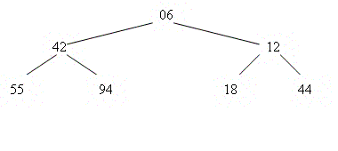 Как построить пирамиду на базе сортируемого массива? Во-первых, надо рассматривать алгоритм построения и расширения пирамиды. Пусть дана исходная пирамида из семи элементов, которую мы хотим расширить, добавив элемент h1 =44. 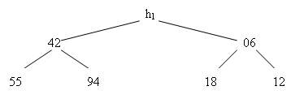 Добавляем этот элемент в корень будущей пирамиды. Далее этот элемент просеивается по пути, на котором находятся меньшие по сравнению с ним элементы. Просеивание идет до тех пор, пока элемент не займет правильное место. Встречающиеся на пути меньшие элементы соответственно поднимаются вверх. При этом в корень попадает минимальный элемент. 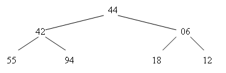 При просеивании соблюдается правило: если промежуточный узел имеет сыновей, ключи которых меньше, то следующим выбирается сын с наименьшим ключом, то есть при просеивании 44 мы выберем узлы 6 и 12 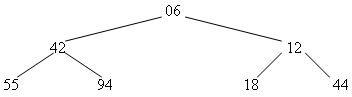 Как в сортируемом массиве выстроить пирамиду? Вторую половину массива можно считать нижним уровнем пирамиды. Здесь элементы взаимно не упорядочены. Будем постепенно добавлять к пирамиде слева элементы, и просеивать их. 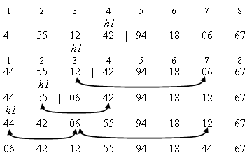 После этого процесса в массиве сформирована перестановка элементов, соответствующая пирамиде: 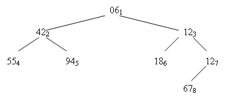 Теперь надо удалить элемент из пирамиды таким образом, чтобы в ее вершине вновь оказался минимальный элемент. Это можно сделать, взяв самый последний элемент в пирамиде и поставив его в вершину. Последующее просеивание поставит в вершину новый минимальный элемент.
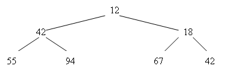 И т. д. пока пирамида не опустеет. Рассмотрим алгоритм просеивания в пирамиду. Входом является массив и индексы, задающие границы строящейся в массиве пирамиды. Shift (A [l .. r ] )
1.
2. i ← l 3. j ← 2i 4. x ← A[i] 5. if j < r and A[j+1] < A[j] 6. then j ← j + 1 7. while j ≤ r and A[j] < x 8. do A[i] ← A[j] 9. i ← j 10. j ←2×i 11. if j < r and A[j+1] < A[j] 12. then j ← j + 1 13. A[i] ← x 14. return Вопрос: куда девать извлекаемые из пирамиды элементы? Их можно помещать на место последних элементов, которые переносятся в вершину пирамиды во время сортировки. Удаляем элемент из вершины (06) и затем помещаем в вершину последний элемент (67). Значение 06 помещаем на место 67. При этом в массиве правая граница пирамиды смещается влево на одну позицию. 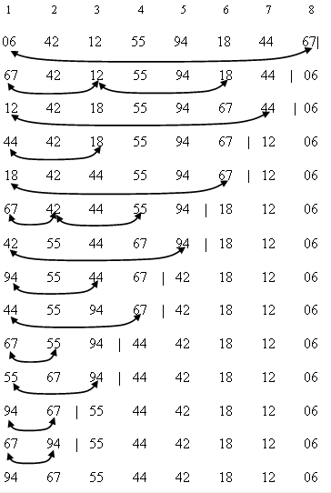 Heap_Sort (A [1.. n ] )
Пирамидальная сортировка не эффективна для небольших размеров массива - n, но очень эффективна при больших n и становится сравнима с сортировкой Шелла. Даже в самом плохом случае сортировка имеет эффективность О(n logn). Неясно, какой случай плохой. Сортировка очень любит последовательности, в которых элементы более менее отсортированы. |
|
|